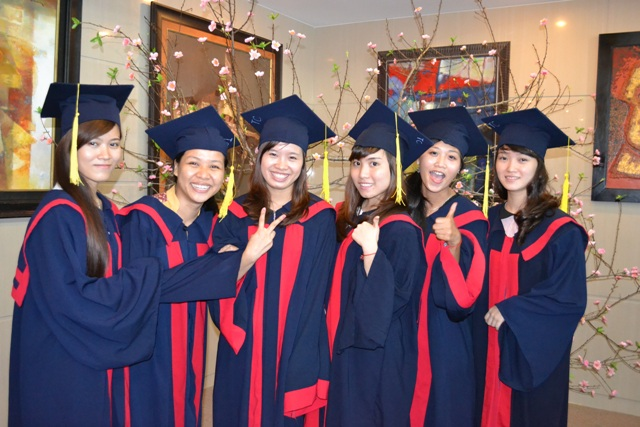

Giáo dục đạo đức HSSV bằng môi trường văn hóa

Lần cập nhật cuối lúc Thứ hai, 18 Tháng 2 2013 08:21 Viết bởi Administrator Thứ hai, 18 Tháng 2 2013 08:20
(GD&TĐ)-Thời đại internet, khi những "bẫy" văn hóa "độc" luôn sẵn sàng để HSSV tiếp cận thì việc hướng những đối tượng này tới những hoạt động giải trí lành mạnh, giàu tính nhân văn trở lên vô cùng quan trọng.

TS, Lê Thị Bích Hồng - Ban Tuyên giáo Trung ương khi nghiên cứu đề tài "Những biến đổi lệch lạc trong đạo đức, lối sống của HSSV hiện nay - thực trạng và các giải pháp khắc phục" đã nêu ra 11 vấn đề về thực trạng biến đổi trong đạo đức, lối sống của HSSV, trong đó, vấn đề đầu tiên là đời sống văn hoá HSSV diễn biến theo chiều hướng phức tạp, có nhiều sự lựa chọn khi tiếp cận các giá trị văn hoá.
TS.Hồng dự báo, xã hội hiện đại, khả năng đáp ứng của gia đình sẽ thu hẹp và điều kiện xã hội sẽ tích cực tạo cơ hội tối đa để thoả mãn sự phát triển của thanh niên HSSV. Cuộc đấu tranh về ý thức hệ cũng sẽ diễn ra gay go và quyết liệt hơn, khi các thế lực thù địch ở trong và ngoài nước muốn tranh thủ một bộ phận thanh niên HSSV chậm tiến, lệch lạc trong đạo đức, lối sống bằng cách sử dụng lối sống thực dụng, ích kỷ, phi nhân tính...tăng cường đưa những sản phẩm văn hóa độc hại, đồi trụy, phản văn hóa...để từng bước làm biến chất thanh niên HSSV. Lối sống và nhân cách sống của thanh niên HSSV trong những năm tới sẽ khác xa với thời kỳ trước đây và hôm nay.
"Ngày nay, nhu cầu hưởng thụ văn hóa lớn, nhưng số đông HSSV ít được tiếp cận với các chương trình nghệ thuật. Những thiết chế văn hóa chung phục vụ nhu cầu giải trí của HSSV quá ít. Cũng vì thế, nhiều HSSV thiếu "mặn mà" với các loại hình nghệ thuật, các hoạt động tập thể; tham gia các hoạt động đoàn thể gần như bắt buộc, hình thức. Vô hình chung sự "bỏ qua" ấy đã tạo thành thói quen thờ ơ với các hoạt động nghệ thuật mang tính giáo dục thẩm mỹ" – TS Hồng nhận định.
Vì vậy, một trong những giải pháp là cần tăng cường các hoạt động văn hóa tại các Trung tâm văn hóa thanh niên cho HSSV. Hướng họ tới những hoạt động giải trí lành mạnh, giàu tính nhân văn để thanh niên HSSV tránh được những cạm bẫy, nọc độc của những sản phẩm văn hóa độc. Khi mặt bằng thưởng thức văn hóa nói chung được nâng cao, thì sự cảm thụ nghệ thuật trong HSSV sẽ có những chuyển biến tích cực. Đây là một chính sách lớn cần phải làm khi mức sống của người dân ngày càng được nâng cao.
Gần đây, những bộ phim, trò chơi phát sóng trên Đài Truyền hình Việt Nam, như: Nhật ký Vàng Anh, Bộ tứ 10H, SV96 trở lại năm 2011, Đường lên đỉnh Ôlimpia...đã quan tâm dành riêng cho chính thanh niên HSSV. Tuy nhiên, dù đã xuất hiện tác phẩm dành cho tuổi mới lớn nhưng chưa chú ý đến tính văn hóa, thuần phong mỹ tục của người Việt, nên vẫn để nhiều yếu tố nhạy cảm trong phim không phù hợp với tâm lý lứa tuổi.
Bên cạnh đó, xây dựng tốt đời sống văn hoá trong trường học là một trong những nhóm giải pháp quan trọng, là việc làm cần thiết đòi hỏi sự quan tâm của toàn xã hội; sự vào cuộc đồng bộ của các cấp, các ngành, các đoàn thể trong việc phối hợp chỉ đạo, nâng cao chất lượng giáo dục toàn diện.
TS.Hồng cho rằng, các hoạt động văn hóa chỉ có thể tác động trực tiếp đến sinh viên khi trường quan tâm tổ chức các hoạt động văn hóa, thể dục thể thao... Các trường đại học, cao đẳng, trung cấp thường đóng trên địa bàn thành phố lớn, nên ngoài giờ học tập trên lớp, SV còn tham gia nhiều hoạt động ở bên ngoài, như học ngoại ngữ, tin học, làm việc thêm để mưu sinh, giúp đỡ gia đình. Dù một bộ phận SV ít có thời gian, điều kiện tham gia các hoạt động văn hóa ở trường, nhưng nhà trường phải chủ động tổ chức nhiều hoạt động thu hút họ tham gia. Thêm nữa, phải bổ sung tiêu chí đánh giá SV qua các hoạt động do nhà trường tổ chức, như: Văn hóa, văn nghệ, thể dục thể thao, hoạt động xã hội từ thiện (Đền ơn đáp nghĩa, Ngày vì người nghèo, Hiến máu tình nguyện...)...
Phải quan tâm đầu tư cơ sở vật chất cho việc học tập, ăn ở và hoạt động văn hoá, văn nghệ, thể dục thể thao cho SV; tổ chức nhiều loại hình câu lạc bộ phù hợp với tuổi trẻ để thu hút được nhiều HSSV tham gia; định kỳ thông báo chính trị, thời sự cho SV; thường xuyên tổ chức các cuộc đối thoại giữa các cấp lãnh đạo với SV nhằm lắng nghe những tâm tư của họ, kịp thời giải quyết các chế độ chính sách và những yêu cầu chính đáng của họ.
Cùng với đó, khuyến khích sự đóng góp, hiến tặng của các tổ chức, cá nhân trong và ngoài nước xây dựng các thiết chế văn hoá trường học; phối hợp cùng địa phương xây dựng môi trường văn hóa lành mạnh (quản lý dịch vụ văn hóa, truy quét các sản phẩm độc hại và các tệ nạn xã hội...); tổ chức các sinh hoạt văn hoá lành mạnh trong các trường học; kêu gọi văn nghệ sĩ biểu diễn vì thế hệ trẻ HSSV.
Việc phát huy tính tích cực và điều chỉnh những hành vi lệch lạc trong ý thức đạo đức, văn hoá của HSSV, có tác dụng vô cùng to lớn trong việc phát triển và sử dụng nguồn lực quý này. Vì thế, giáo dục tư tưởng chính trị, đạo đức, lối sống cho HSSV là một nhiệm vụ cần thiết, cấp bách hơn bao giờ hết và cần được toàn xã hội, nhà trường và gia đình quan tâm. Theo đó, vấn đề đặt ra là cần thường xuyên tổ chức các hoạt động văn hoá, xây dựng đời sống văn hóa trong SV theo những tiêu chí phù hợp để HSSV có bản lĩnh văn hoá, đủ sức tự đề kháng trước những tiêu cực nẩy sinh trong đời sống tinh thần xã hội trước xu thế hội nhập quốc tế ngày càng sâu rộng hiện nay.
(Nguồn GDTD.vn)
itnbk.edu.vn- 23/08/2013 09:40 - Chị em Hiền - Hòa
- 23/08/2013 09:33 - Cho những ngày sau
- 17/04/2013 09:21 - Thủ lĩnh trẻ tương lai
- 27/02/2013 08:03 - Tăng cường các biện pháp chống tiêu cực trong Kì t…
- 19/02/2013 07:56 - Lưu ý khi ghi hồ sơ ĐKDT vào ĐH, CĐ 2013
- itnbk.edu.vn
- 18/02/2013 08:16 - Giáo dục phổ thông đã có những chuyển biến tích cự…
- 21/01/2013 07:48 - Tạm dừng mở mới ngành Tài chính ngân hàng
- 27/12/2012 20:17 - Nhiều điểm mới trong quy chế thi tốt nghiệp THPT
- 07/12/2012 13:39 - Giáo dục giới tính: Còn nhiều rào cản
- 29/11/2012 07:42 - Học nghề cho... vui